一个面向家庭的健康数据管理应用：家庭成员共同记录血压/心率/血糖/体温/体重，
拍照自动识别血压计读数，异常自动预警，数据可导出留档。
配套文档：
docs/api.md（接口）、docs/database.md（数据库）、docs/aliyun-deployment.md（部署）、docs/user-manual.md（纯文字版手册）
| 痛点 | 本应用的做法 |
|---|---|
| 家里老人的血压计读数要手抄到本子上 | 拍照识别，自动读出收缩压/舒张压/脉搏 |
| 一家人各自的数据分散、互相不知道 | 家庭维度共享，成员各自记录、彼此可见 |
| 血压偏高时没人提醒 | 预警规则：超过阈值自动产生预警记录 |
| 复诊时医生说"把最近的数据给我" | 一键导出 CSV / JSON / Excel |
flowchart LR
subgraph 账号["👤 账号"]
A1[注册 / 登录]
A2[修改密码]
A3[编辑资料]
end
subgraph 家庭["👨👩👧 家庭协作"]
B1[创建家庭]
B2[邀请家人<br/>邀请码 / 二维码]
B3[成员增删改]
B4[退出 / 解散家庭]
end
subgraph 健康["❤️ 健康数据"]
C1[手动录入 8 类指标]
C2[拍照识别血压]
C3[蓝牙设备同步]
C4[趋势统计]
end
subgraph 预警["🔔 健康预警"]
D1[预警规则配置]
D2[预警记录查看]
D3[已读 / 已处理]
end
subgraph 数据["📤 数据管理"]
E1[导出 CSV/JSON/Excel]
E2[保存 / 分享 / 复制]
end
账号 --> 家庭 --> 健康 --> 预警 --> 数据
flowchart TB
subgraph Client["📱 Flutter App（Android）"]
UI["页面 / 组件<br/>GetX 状态管理"]
NET["网络层<br/>Dio + 拦截器<br/>Token 自动携带 / 401 处理"]
LOCAL["本地存储<br/>GetStorage 缓存"]
OCR["OCR 子系统<br/>七段数码管识别"]
BT["蓝牙子系统<br/>flutter_blue_plus"]
UI --> NET
UI --> LOCAL
UI --> OCR
UI --> BT
end
subgraph Server["🖥 阿里云 ECS"]
API["Spring Boot 2.7<br/>:8080"]
SEC["JWT 鉴权 +<br/>角色拦截器"]
SVC["业务服务层"]
MP["MyBatis-Plus"]
API --> SEC --> SVC --> MP
end
DB[("🐬 MySQL 8.0<br/>health_center_db")]
Files["📁 导出文件<br/>Android/data/.../files"]
NET -->|"REST / JSON<br/>X-App-Version 头"| API
MP --> DB
OCR --> Files
| 层 | 技术 | 版本 | 作用 |
|---|---|---|---|
| 客户端 | Flutter / Dart | 3.24.5 / 3.5.4 | 跨平台 UI |
| 状态管理 | GetX | — | 响应式状态 + 路由 + 依赖注入 |
| 屏幕适配 | flutter_screenutil | — | 设计稿等比缩放 |
| 图表 | fl_chart | — | 趋势统计 |
| 网络 | Dio | — | 拦截器统一处理 Token / 错误 |
| 本地存储 | GetStorage | — | 登录态、缓存 |
| 蓝牙 | flutter_blue_plus | — | BLE 心率设备 |
| 服务端 | Spring Boot | 2.7.18 | REST API |
| 持久层 | MyBatis-Plus | 3.5.5 | ORM + 逻辑删除 + 自动填充 |
| 鉴权 | JJWT | 0.12.3 | 无状态 Token |
| 数据库 | MySQL | 8.0.46 | 业务数据 |
| 开发态数据库 | H2（内存） | — | 本地免安装调试 |
重点：本项目有两套"角色"概念，容易混淆，务必区分。
flowchart LR
U["用户账号"] --> R1["全局角色 role<br/>ADMIN / USER"]
U --> R2["家庭角色 familyRole<br/>admin / member"]
R1 -->|"决定"| P1["早期接口的 @RequireRole 判定"]
R2 -->|"决定"| P2["家庭内管理权限<br/>增删成员 / 配置预警"]
style R2 fill:#c8e6c9
| 能力 | 家庭管理员<br/>（familyRole=admin） | 普通成员<br/>（familyRole=member） |
|---|---|---|
| 查看家庭 / 成员列表 | ✅ | ✅ |
| 新增 / 编辑 / 删除家庭成员 | ✅ | ❌ |
| 配置预警规则 | ✅ | ❌ |
| 邀请家人（查看邀请码） | ✅ | ❌ |
| 退出家庭 | 需先转让或解散 | ✅ |
| 录入 / 查看健康数据 | ✅ | ✅ |
⚠️ 曾经的坑（已修）：权限判定一度只看全局
role，导致"后注册的普通用户即使自己建了家庭、是该家庭管理员，也加不了成员、配不了预警"。现已改为"全局 ADMIN 或 家庭管理员"任一满足即通过。
| 首页 | 成员 | 健康 |
|---|---|---|
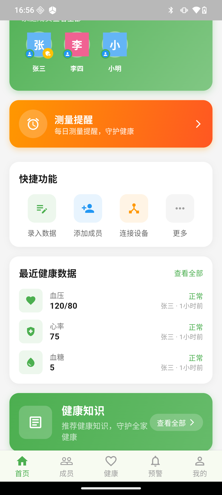 | 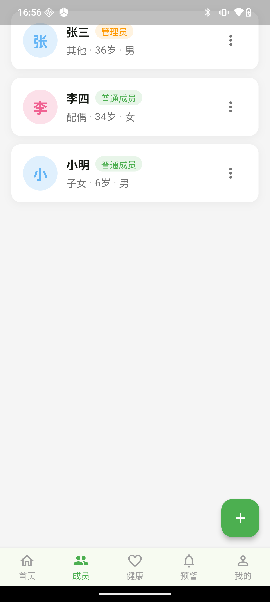 | 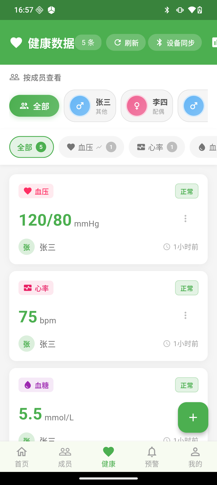 |
| 健康分、家庭概览、今日待办 | 家庭成员卡片、角色/关系/年龄 | 健康数据列表、按成员/类型筛选 |
| 预警 | 我的 |
|---|---|
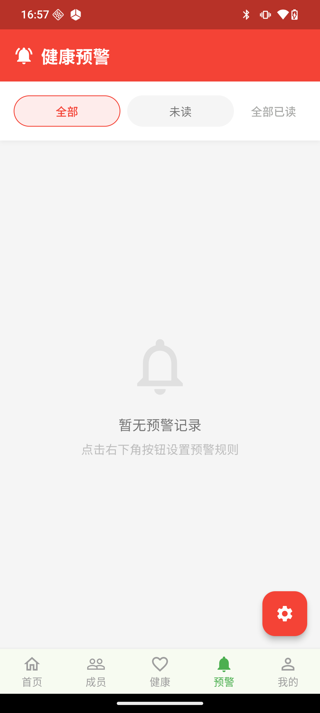 | 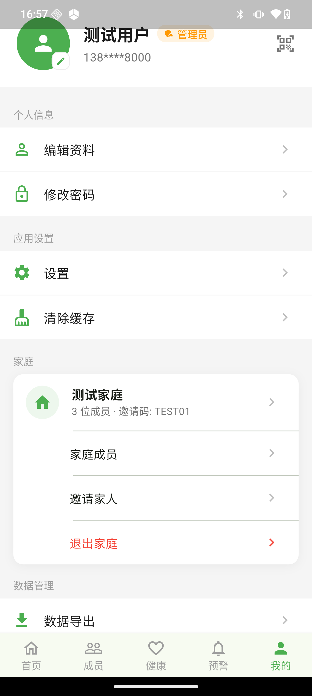 |
| 预警记录、全部已读、规则入口 | 个人信息、家庭卡片、数据管理、设置 |
| 登录 | 注册 |
|---|---|
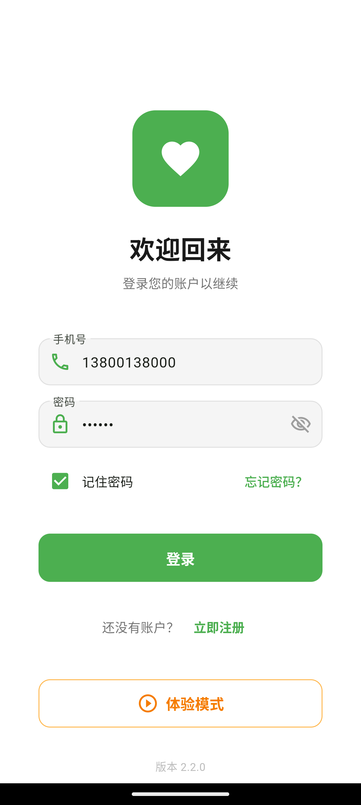 | 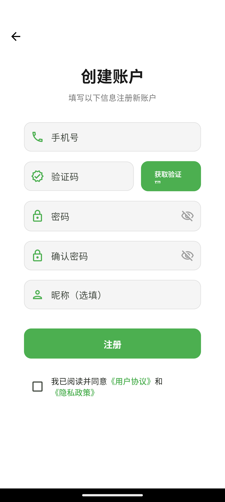 |
登录步骤
登录失败时会明确提示原因（如「手机号或密码错误」）。注意：早期版本输错密码界面毫无反应、还会清空手机号，原因是把业务 401 当成了"Token 过期"并跳转登录页 —— 现已修复。
注册步骤
⚠️ 上线前必须处理：当前后端未校验验证码（
UserServiceImpl中直接跳过），且没有发码接口。也就是说任何人可用任意 6 位数字注册任意手机号。需接入短信服务或明确改为免验证注册。
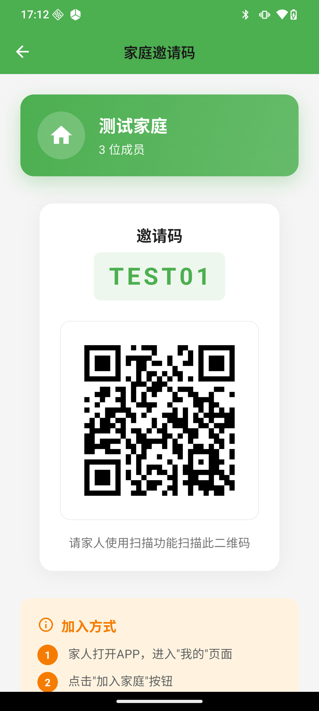
| 操作 | 路径 | 说明 |
|---|---|---|
| 创建家庭 | 首页「创建或加入家庭」→「创建家庭」→ 输入家庭名 | 创建者自动成为家庭管理员 |
| 加入家庭 | 首页「创建或加入家庭」→「扫码加入」 | 扫家人分享的二维码 |
| 邀请家人 | 我的 →「邀请家人」 | 显示 6 位邀请码 + 二维码 |
邀请页会显示家庭名、成员数、邀请码（如 TEST01）与二维码，家人扫码或输入邀请码即可加入。
| 成员列表 | 编辑成员 |
|---|---|
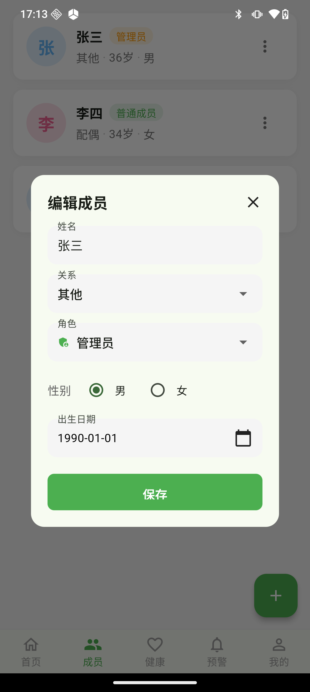 |
添加成员：成员页右下角 ➕ → 填写姓名 / 性别 / 关系 / 角色 / 出生日期 → 保存
编辑 / 删除：点成员卡片右侧按钮 → 选择「编辑」或「删除」
可选关系：父亲、母亲、配偶、子女、丈夫、妻子、儿子、女儿、爷爷、奶奶、外公、外婆、其他
⚠️ 曾经的坑（已修）：成员增删改一度是假实现（只改内存、提示"成功"、服务端从未收到请求），重启 App 后改动全部消失。现已改为真实调用接口，并以服务端返回为准刷新列表。
| 健康数据列表 | 添加记录 |
|---|---|
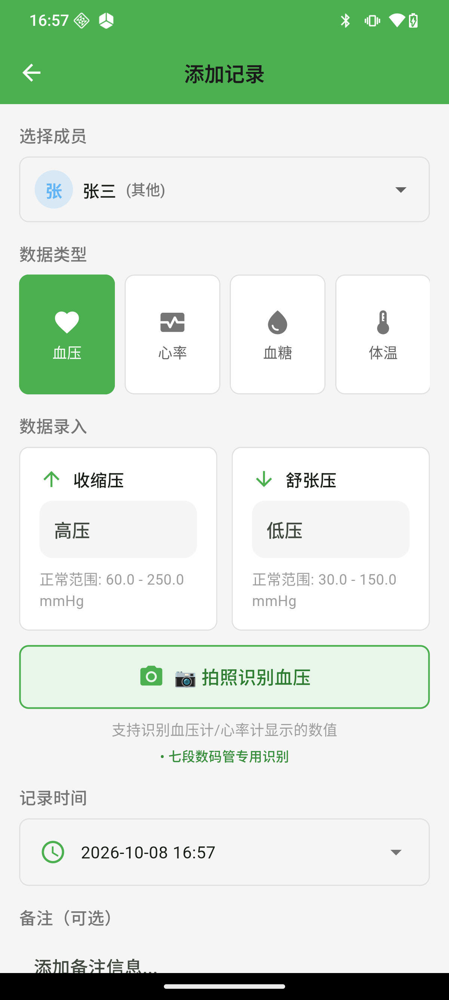 |
手动录入
| 识别方式选择 |
|---|
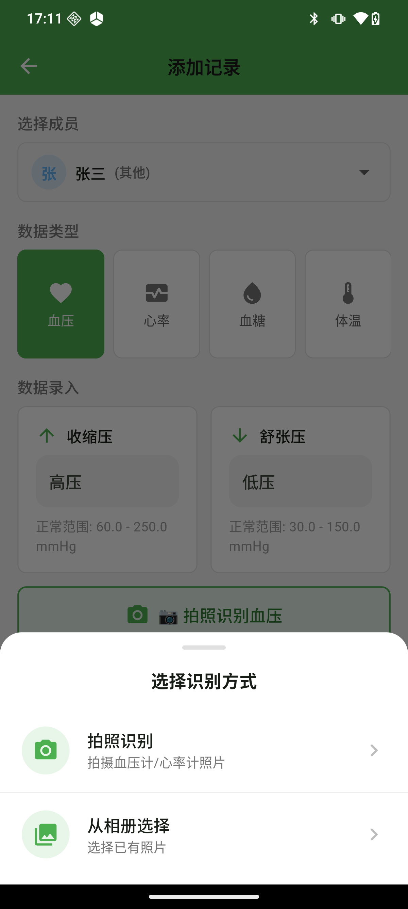 |
操作：添加记录页 →「📷 拍照识别血压」→「拍照识别」或「从相册选择」→ 自动识别 → 弹窗确认 →「确认填充」
识别成功后弹窗会显示识别结果（如 血压: 120.0/80.0 mmHg，心率: 75.0 bpm），并可一键填入表单；识别结果可手动修改。
📖 识别原理与精度数据见 9.1 OCR 精度
| 导出配置 | 导出结果 |
|---|---|
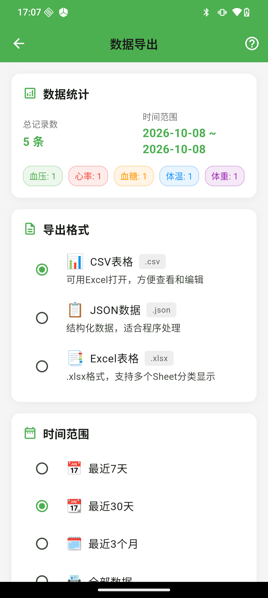 | 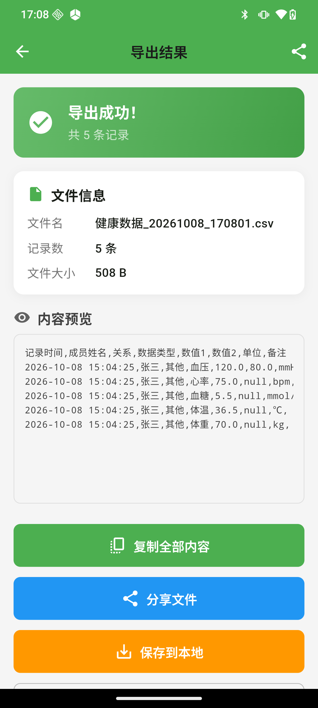 |
步骤
保存位置：/storage/emulated/0/Android/data/com.healthcenter.health_center_app/files/HealthExport/
| 我的 | 设置 | 修改密码 |
|---|---|---|
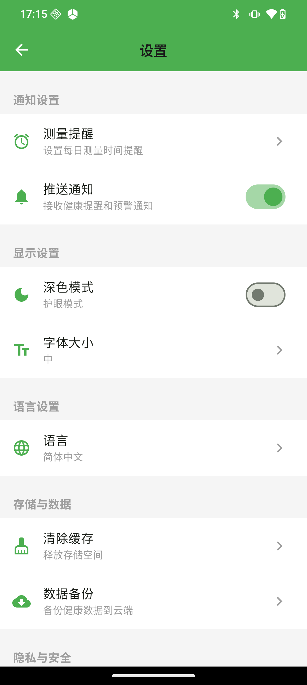 | 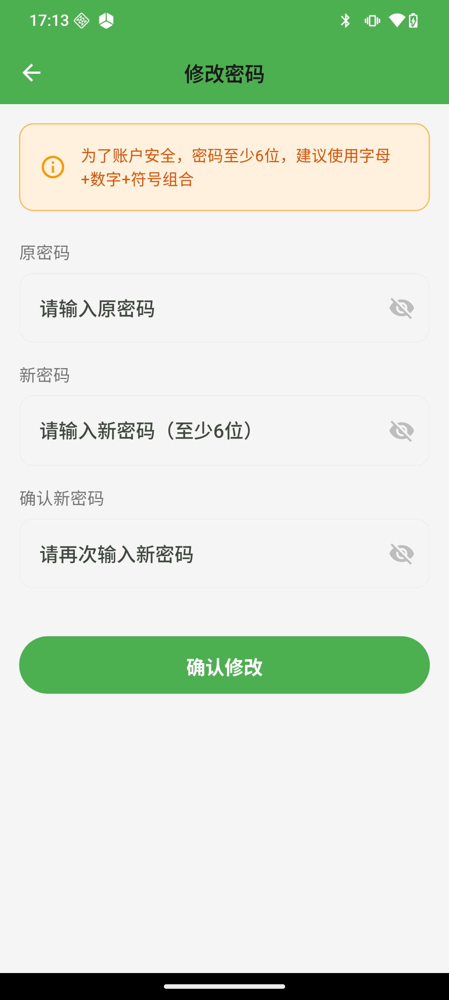 |
sequenceDiagram
participant U as 用户
participant A as App
participant S as 后端
participant D as 数据库
U->>A: 输入手机号 + 密码
A->>S: POST /api/auth/login
S->>D: 按手机号查用户
D-->>S: 用户记录
S->>S: BCrypt 校验密码
alt 校验通过
S->>S: 签发 AccessToken(2h) + RefreshToken(7d)<br/>claims: userId / phone / role
S-->>A: 200 + token + userInfo
A->>A: 存入本地（GetStorage）
A-->>U: 跳转首页
else 密码错误
S-->>A: 401 原密码错误
A-->>U: 顶部提示「手机号或密码错误」<br/>（不清空输入、不跳转）
end
Note over A,S: 后续请求自动带 Authorization: Bearer <token><br/>收到业务 401 不再强制退出（仅 Token 过期才退出）
flowchart TD
A["选择图片（拍照 / 相册）"] --> B["读取图片"]
B --> C{"屏幕区域检测<br/>置信度 > 0.5 ?"}
C -->|是| D{"裁剪结果是否过小?<br/>小于 240x180 或不足原图 25%"}
D -->|过小| E["放弃裁剪，用原图"]
D -->|合理| F["裁剪到屏幕区域"]
C -->|否| E
E --> G["通用七段识别器"]
F --> G
G --> G1["① 自适应局部阈值二值化<br/>（自动判定极性）"]
G1 --> G2["② 开运算去细线<br/>（去掉屏幕边框线）"]
G2 --> G3["③ 多尺度连通域 + 结构法合成数字"]
G3 --> G4["④ 灰度对比度相对归一化<br/>判断七段亮灭"]
G4 --> G5["⑤ 按位置线索判定<br/>收缩压 / 舒张压 / 脉搏"]
G5 --> H{"生理范围校验通过?"}
H -->|是| I["返回识别结果"]
H -->|否| J["回退旧检测链<br/>（TFLite / 各 SmartXxx 检测器）"]
J --> K{"结果有效?"}
K -->|是| I
K -->|否| L["提示识别失败"]
I --> M["弹窗确认 → 填入表单"]
关键设计：多假设择优。二值化极性、开运算开关、膨胀半径、是否合并散段，全部作为独立假设分别尝试，最后按统一评分选最优结果，避免被单一假设绑死。
flowchart LR
A["录入健康数据"] --> B["保存成功"]
B --> C["读取该用户启用的预警规则"]
C --> D{"数值是否越过阈值?"}
D -->|否| E["仅保存数据"]
D -->|是| F["生成预警记录<br/>级别: info/warning/danger"]
F --> G["预警 tab 显示"]
G --> H["用户标记已读 / 已处理"]
stateDiagram-v2
[*] --> 无家庭
无家庭 --> 家庭管理员: 创建家庭（创建者=admin）
无家庭 --> 家庭成员: 邀请码 / 扫码加入
家庭管理员 --> 家庭管理员: 增删成员、配置预警、邀请家人
家庭成员 --> 无家庭: 退出家庭
家庭管理员 --> 无家庭: 成员>1 时需先转让或解散<br/>仅剩自己时可直接退出（家庭解散）
flowchart TD
A["我的 → 数据导出"] --> B["按时间范围 + 数据类型筛选"]
B --> C["选择格式 CSV / JSON / Excel"]
C --> D["生成内容（含 UTF-8 BOM，Excel 中文不乱码）"]
D --> E{"有可导出数据?"}
E -->|否| F["提示：当前条件下无数据"]
E -->|是| G["进入导出结果页"]
G --> H["保存到本地<br/>Android/data/包名/files/HealthExport/"]
G --> I["分享文件<br/>先写临时文件再调系统分享"]
G --> J["复制全部内容<br/>写入剪贴板"]
flowchart TB
C["interfaces/controller<br/>REST 入口"] --> D["interfaces/dto<br/>请求 / 响应对象"]
C --> S["service / impl<br/>业务逻辑"]
S --> M["domain/mapper<br/>MyBatis-Plus Mapper"]
M --> E[("domain/entity<br/>数据库实体")]
C --> SEC["config/RoleInterceptor<br/>角色校验"]
S --> EX["exception/GlobalExceptionHandler<br/>统一异常 → ApiResponse"]
erDiagram
USER ||--o| FAMILY : "属于（family_id）"
USER ||--o{ FAMILY_MEMBER : "档案行"
FAMILY ||--o{ FAMILY_MEMBER : "包含"
USER ||--o{ HEALTH_DATA : "录入"
USER ||--o{ ALERT_RULE : "配置"
USER ||--o{ ALERT_RECORD : "产生"
FAMILY_MEMBER ||--o{ HEALTH_DATA : "归属"
USER {
bigint id PK
varchar phone "唯一"
varchar password "BCrypt"
varchar nickname
varchar role "全局角色 ADMIN/USER"
bigint family_id FK
varchar family_role "家庭角色 admin/member"
}
FAMILY {
bigint id PK
varchar family_name
varchar family_code "邀请码"
bigint admin_id
int member_count "按实际行数重算"
}
FAMILY_MEMBER {
bigint id PK
bigint user_id FK
bigint family_id FK "NULL=未归属"
varchar name
varchar relation
date birthday
}
HEALTH_DATA {
bigint id PK
bigint user_id FK
bigint member_id
varchar data_type
decimal value1
decimal value2
datetime measure_time
}
ALERT_RULE {
bigint id PK
bigint user_id FK
varchar rule_name
varchar condition_type "gt/between/lt"
decimal threshold1
decimal threshold2
tinyint enabled
}
ALERT_RECORD {
bigint id PK
bigint user_id FK
varchar alert_level
varchar status
}
| 分类 | 接口 | 说明 |
|---|---|---|
| 认证 | POST /api/auth/register login refresh logout change-password | 注册/登录/刷新/登出/改密 |
| 用户 | GET /user/info、资料更新 | 个人信息 |
| 家庭 | POST /api/family/create join leave | 创建/加入/退出 |
| 家庭 | GET /api/family/my members qrcode info/{code} | 家庭信息/成员/二维码/邀请码解析 |
| 成员 | GET/POST /api/members、PUT/DELETE /api/members/{id} | 成员增删改查 |
| 健康 | GET/POST /api/health-data | 健康数据 |
| 预警 | GET/POST /api/alert-rules、PUT/DELETE /api/alert-rules/{id}、/{id}/toggle | 规则管理 |
| 预警 | GET /api/alert-records | 预警记录 |
flowchart LR
subgraph Dev["开发机（Windows）"]
SRC["源码"]
APK["APK 构建"]
DBV["DbViewer<br/>127.0.0.1:18090<br/>只读查库"]
end
subgraph Cloud["阿里云 ECS 139.129.108.119"]
NG["Spring Boot :8080<br/>systemd: health-app"]
MY[("MySQL 3306<br/>health_center_db")]
LOG["/opt/health-center/logs/app.log"]
end
PH["📱 Android 手机"]
SRC -->|"mvnw package + scp"| NG
NG --> MY
NG --> LOG
SRC --> APK --> PH
PH -->|"REST"| NG
DBV -.->|"只读 JDBC"| MY
flowchart TD
A["本地改代码"] --> B["flutter analyze / mvnw package"]
B --> C{"本地验证通过?"}
C -->|否| A
C -->|是| D["备份线上 jar<br/>/opt/health-center/backup-jar-日期/"]
D --> E["scp 上传新 jar"]
E --> F["校验 md5 一致"]
F --> G["替换 jar + systemctl restart health-app"]
G --> H{"systemctl is-active<br/>= active?"}
H -->|否| I["回滚：用备份 jar 重启"]
H -->|是| J["接口冒烟测试"]
J --> K["清理测试数据"]
常用运维命令
# 服务状态 / 重启
systemctl status health-app
systemctl restart health-app
# 看日志
tail -f /opt/health-center/logs/app.log
# 回滚
cp /opt/health-center/backup-jar-<时间>/health-center-backend-1.0.0.jar \
/opt/health-center/target/health-center-backend-1.0.0.jar
systemctl restart health-app# 用 H2 内存库启动后端（每次重启数据重置，适合测试）
java -jar spring-boot-backend/target/health-center-backend-1.0.0.jar --spring.profiles.active=dev
# 手机通过 USB 隧道访问本机后端
adb reverse tcp:8080 tcp:8080
# App 用 --dart-define=BASE_URL=http://127.0.0.1:8080 构建方法：用程序生成真值已知的七段数码管图像（4 种液晶风格 × 12 组数值 × 4 档退化 = 192 张）， 跑真实检测代码逐张比对。基准工具在 flutter-app/tool/，可随时重跑回归。
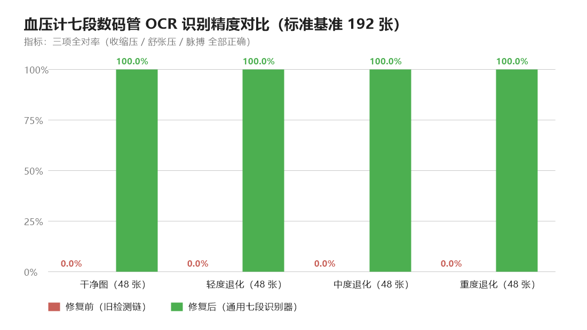
| 指标 | 修复前（旧检测链） | 修复后（通用七段识别器） |
|---|---|---|
| 收缩压正确 | 0.5% | 100.0% |
| 舒张压正确 | 5.2% | 100.0% |
| 脉搏正确 | 3.1% | 100.0% |
| 三项全对 | 0.0% | 100.0% |
| 干净图（48 张） | 0.0% | 100% |
| 退化图（144 张） | 0.0% | 100% |
退化档位含：噪声、高斯模糊、亮度/对比度偏移、降采样、JPEG 压缩。
复现方式
cd flutter-app
dart run tool/ocr_bench.dart gen all # 生成数据集
dart run tool/ocr_bench_compare.dart tool/ocr_bench_data # 新旧链路对比
dart run tool/ocr_debug_one.dart tool/ocr_bench_data/s0_v0_clean.png --full # 单图诊断在真机上用同一批图片复验，日志确认走的是新识别器：
[SevenSegment] 原始图像尺寸: 900x620
[SevenSegment] 尝试通用七段识别器...
[SevenSegment] ✓ 通用七段识别成功: 101/71, 73 bpm (置信度 0.92) ← 耗时约 1.4 秒
[OcrButton] 识别结果: isValid=true, systolic=101.0, diastolic=71.0, heartRate=73.0该图真值 101/71/73，识别结果完全一致。
| 限制 | 说明 |
|---|---|
| 验证码未校验 | 后端跳过短信校验，上线前必须处理 |
| 健康内容为空 | health_content 表无数据，App 显示「内容服务暂未接入」 |
| 日记 / 提醒 / 设备为本地功能 | 后端无对应接口，换机不迁移 |
| 蓝牙同步 | 依赖设备广播，实测部分心率设备连上后收不到数据 |
| 复杂机身背景的识别 | 含外壳/反光/斜拍的严苛场景仍在迭代 |
flowchart TD
S["App 出现异常"] --> Q1{"能打开 App?"}
Q1 -->|否，闪退| A1["看 logcat：adb logcat | grep -E 'FATAL|flutter'"]
Q1 -->|是| Q2{"能登录?"}
Q2 -->|否| A2{"提示什么?"}
A2 -->|手机号或密码错误| A21["确认账号；或后端是否可达"]
A2 -->|网络错误| A22["检查服务是否 active、8080 是否放通、<br/>手机网络/隧道 adb reverse"]
Q2 -->|是| Q3{"数据不显示?"}
Q3 -->|列表空| A3["下拉刷新；确认该账号/家庭是否真有数据"]
Q3 -->|显示与预期不符| A4["用 DbViewer 直连数据库核对真值"]
| 现象 | 可能原因 | 处理 |
|---|---|---|
| 登录后停在登录页 | Token 未存 / 接口 401 | 查后端日志 用户登录成功，再看是否返回了 token |
| 成员列表为空但家庭有人 | 成员行 family_id 为空（历史孤儿行） | 属于已知历史数据问题，已修复新增路径 |
| 新增成员后看不到 | 早期 bug：未写 family_id | 已修复 |
| 拍照识别失败 | 图片过小 / 屏幕检测裁剪过度 | 已加裁剪保护；重拍更清晰的整屏照片 |
| 导出文件找不到 | Android 10+ 应用专用目录 | 路径见 App 内提示，或用「分享文件」转发 |
| 改密码输错原密码被踢下线 | 早期 bug：业务 401 被当作 Token 过期 | 已修复为排除 /api/auth/** |
| 清除缓存提示"已清除 0 条" | 本地缓存本就为空 | 正常现象 |
ReadHealthInfo/
├── flutter-app/ # 客户端
│ ├── lib/
│ │ ├── app/modules/ # 功能模块（GetX）
│ │ │ ├── login/ register/ # 登录注册
│ │ │ ├── home/ # 首页 + 5 个 tab 页
│ │ │ ├── members/ family/ # 成员与家庭
│ │ │ ├── health/ # 健康数据
│ │ │ ├── alerts/ # 预警
│ │ │ ├── export/ # 导出
│ │ │ └── profile/ # 个人中心
│ │ ├── core/
│ │ │ ├── ocr/ # OCR 子系统（识别器 + 基准可跑）
│ │ │ ├── bluetooth/ # 蓝牙
│ │ │ ├── network/ # Dio 封装
│ │ │ ├── models/ storage/ # 模型与本地存储
│ │ │ └── widgets/ # 通用组件
│ │ └── main.dart
│ ├── tool/ # OCR 基准 / 诊断工具（纯 Dart 可跑）
│ └── assets/ # 图标、OCR 模型与语言数据
├── spring-boot-backend/ # 服务端
│ └── src/main/java/com/health/
│ ├── interfaces/ # controller / dto
│ ├── service/ # 业务逻辑
│ ├── domain/ # entity / mapper
│ └── config/ # 鉴权、拦截器、MyBatis 配置
├── docs/ # 文档
│ ├── images/ # 本文档所有截图与图表
│ ├── api.md / database.md # 接口与数据库
│ ├── 使用说明.md # 本文档
│ └── user-manual.md # 纯文字版手册
├── scripts/dbviewer/ # 只读数据库查看器（本地网页）
└── dist/ # 发布用 APK*文档中的界面截图均来自真机运行（测试账号 + 本地模拟后端），图表数据来自可复现的自动化基准。*